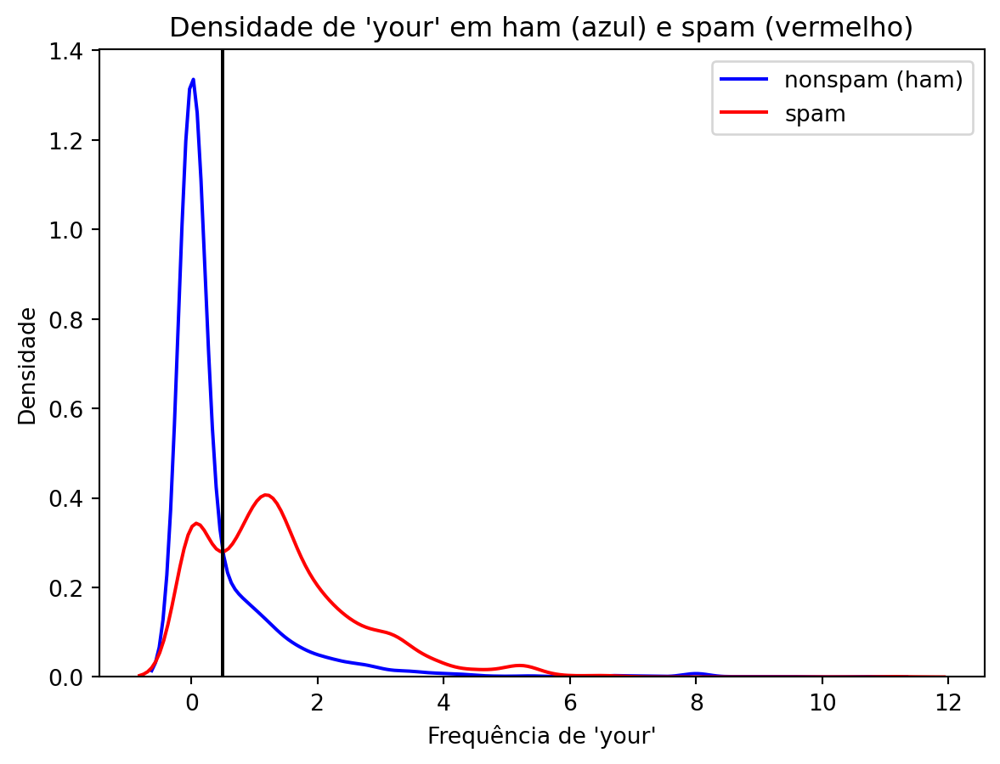
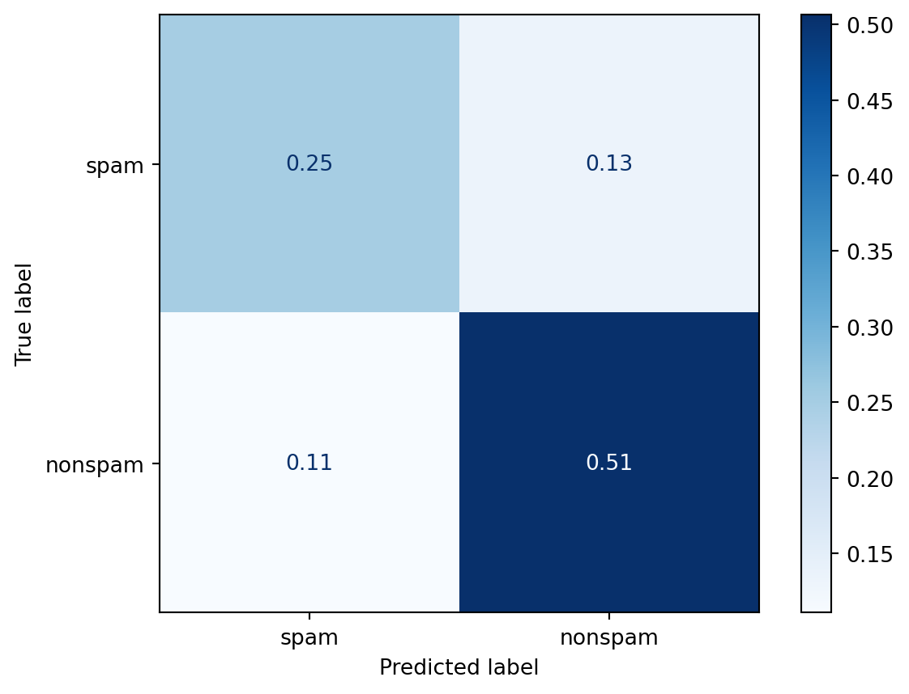
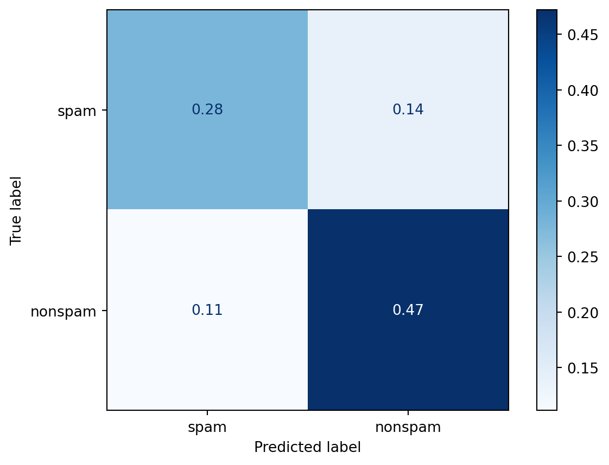

# instalando o pacote ucimlrepo pelo terminal
# pip install ucimlrepo8 Predição
Neste capítulo, vamos estudar sobre os algoritmos de predição, que são capazes de inferir se um dado pertence ou não a uma certa categoria. Dessa forma, eles são construidos utilizando as seguintes etapas: Pergunta → Amostra de entrada → Características → Algoritmo → Parâmetros → Avaliação.
Pergunta
O nosso objetivo é responder a uma pergunta de tipo “O dado A é do tipo x ou do tipo y?”. Por exemplo, podemos querer saber se é possível detectar automaticamente se um e-mail é um spam ou um “ham”, isto é, não spam. O que na verdade queremos saber é: “É possível usar características quantitativas para classificar um e-mail como spam?”.
Amostra de Entrada
Uma vez formulada a pergunta, precisamos obter uma amostra de onde tentaremos extrair informações que caracterizam a categoria a qual um dado pertence (dados rotulados) e então usar essas informações para classificar outros dados não categorizados. O ideal é que se tenha uma amostra grande, assim teremos melhores parâmetros para construir nosso preditor.
No caso da pergunta sobre um e-mail ser spam ou não, temos acesso a base de dados “spambase” disponível no UCI Machine Learning Repository, onde cada linha dessa base é um e-mail e nas colunas temos a frequência (em porcentagem) de palavras, números e caracteres especiais presente em cada um deles. Nesse sentido, nossa variável de interesse (dependente) é a “Class” que classifica o e-mail como spam ou ham (não spam).
# importando a função necessária do pacote
from ucimlrepo import fetch_ucirepo
# busca a base de dados por id e retorna um objeto com os valores das variáveis dependentes e independentes
spambase = fetch_ucirepo(id=94)
# separando as variáveis dependentes e independentes e transformando em um data frame
X = spambase.data.features
y = spambase.data.targets # 1 - Spam / 0 - Ham
y| Class | |
|---|---|
| 0 | 1 |
| 1 | 1 |
| 2 | 1 |
| 3 | 1 |
| 4 | 1 |
| ... | ... |
| 4596 | 0 |
| 4597 | 0 |
| 4598 | 0 |
| 4599 | 0 |
| 4600 | 0 |
4601 rows × 1 columns
Obtida a amostra, precisamos dividi-la em duas partes: o Conjunto de Treino e o Conjunto de Teste. O Conjunto de Treino será usado para construir e treinar o algoritmo, extraindo informações que ajudem a classificar ou prever uma categoria de dado. É crucial que o modelo seja desenvolvido apenas com base no Conjunto de Treino, para garantir que ele aprenda padrões gerais e não se ajuste excessivamente aos dados (evitando o overfitting).
Após o treinamento, o modelo deve ser aplicado ao Conjunto de Teste, que contém dados que não foram usados durante o treinamento. Isso permite avaliar o desempenho do modelo em situações reais, simulando como ele se comportará com dados novos.
# Instalando o pacote scikit-learn
# pip install scikit-learn# Importando a função para dividir a amostra
from sklearn.model_selection import train_test_split# Dividindo a amostra em teste e treino
X_train, X_test, y_train, y_test = train_test_split(X, y, test_size=0.33, random_state=42)Características
Temos que encontrar agora características que possam indicar a categoria dos dados. Podemos, por exemplo, vizualizar algumas variáveis graficamente para obter uma ideia do que podemos fazer. No nosso exemplo de e-mails, podemos querer avaliar se a frequência de palavras “your” em um e-mail pode indicar se ele é um spam ou não.
# Instalando os pacotes necessários
# pip install pandas
# pip install matplotlib
# pip install seaborn
# pip install numpyimport pandas as pd
import matplotlib.pyplot as plt
import seaborn as sns
import numpy as np# transformando em uma série pandas para podermos realizara filtragem
y = y.iloc[:, 0]# filtrando os dados da coluna selecionada por característica
nonspam_data = X[y==0]['word_freq_your']
spam_data = X[y==1]['word_freq_your']# gerando a linha dos ham
ax = sns.kdeplot(nonspam_data, color='blue', label='nonspam (ham)')
# gerando a linha dos spam
ax = sns.kdeplot(spam_data, color='red', label='spam')
# colocando título no gráfico e nos labels e adicionando legenda
ax.set_title("Densidade de 'your' em ham (azul) e spam (vermelho)")
ax.set_xlabel("Frequência de 'your'")
ax.set_ylabel("Densidade")
ax.legend()
# pset_lotando o gráfico
plt.show()Pelo gráfico podemos notar que a maioria dos e-mails que são spam têm uma frequência maior da palavra “your”. Por outro lado, aqueles que são classificados como ham (não spam) têm um pico mais alto perto do 0.
# gerando as linhas dos ham e spam
ax = sns.kdeplot(nonspam_data, color='blue', label='nonspam (ham)')
ax = sns.kdeplot(spam_data, color='red', label='spam')
# colocando título no gráfico e nos labels e adicionando legenda
ax.set_title("Densidade de 'your' em ham (azul) e spam (vermelho)")
ax.set_xlabel("Frequência de 'your'")
ax.set_ylabel("Densidade")
# adicionando o 'c'
ax.axvline(x=0.5, color='black', linestyle='-')
# mostrando a legenda
ax.legend()
# plotando o gráfico
plt.show()
Os e-mails à direita da linha preta seriam classificados como spam, enquanto que os à esquerda seriam classificados como não spam.
Avaliação
Agora vamos avaliar nosso modelo de predição
from sklearn.metrics import confusion_matrix, ConfusionMatrixDisplay# Selecionando os dados e transformando em um array
predicao_treino = X_train['word_freq_your']
# Aplicando a regra que desejamos ("c")
predicao_treino = np.where(predicao_treino > 0.8, "spam", "nonspam")
# Traduzindo a legenda 0 e 1 para as strings
y_train_cm = np.where(y_train["Class"] == 1, "spam", "nonspam")
# Gerando a matriz de confusão do modelo
cm = confusion_matrix(y_train_cm, predicao_treino, labels=["spam", "nonspam"]) # labels serve para escolhermos a ordem em que as variáveis aparecem
cm = (cm / len(y_train_cm))
# Gerando a visualização da matriz de confusão
disp_treino = ConfusionMatrixDisplay(confusion_matrix=cm, display_labels=["spam", "nonspam"])
# Plotando a visualização
disp_treino.plot(cmap=plt.cm.Blues)<sklearn.metrics._plot.confusion_matrix.ConfusionMatrixDisplay at 0x1f43b6196a0>
Podemos ver que quando os e-mails não eram spam e classificamos como “não spam”, de acordo com nosso modelo, em 50% do tempo nós acertamos. Quando os e-mails eram spam e classificamos ele em spam, por volta de 25% do tempo nós acertamos. Então, ao total, nós acertamos por volta de 51+25=76% do tempo. Então nosso algoritmo de previsão tem uma precisão por volta de 76% na amostra treino.
# realizando o mesmo processo acima para a amostra de teste
predicao_teste = np.where(X_test["word_freq_your"] > 0.8, "spam", "nonspam")
y_test_cm = np.where(y_test["Class"] == 1, "spam", "nonspam")
cm_teste = confusion_matrix(y_test_cm, predicao_teste, labels=["spam", "nonspam"]) / len(y_test_cm)
disp_teste = ConfusionMatrixDisplay(confusion_matrix=cm_teste, display_labels=["spam", "nonspam"])
disp_teste.plot(cmap=plt.cm.Blues)<sklearn.metrics._plot.confusion_matrix.ConfusionMatrixDisplay at 0x1f43b405b50>
Já na amostra teste acertamos 47+28=75% das vezes. O erro na amostra teste é o que chamamos de erro real. É o erro que esperamos em amostras novas que passarem por nosso preditor.
Como construir um bom algoritmo de aprendizado de máquina?
O “melhor” método de aprendizado de máquina é caracterizado por:
Uma boa base de dados;
Reter informações relevantes;
Ser bem interpretável;
Fácil de ser explicado e entendido;
Ser preciso;
Fácil de se construir e de se testar em pequenas amostras;
Fácil aplicar a um grande conjunto de dados.
Os erros mais comuns, que se deve tomar um certo cuidado, são:
Tentar automatizar a seleção de variáveis (características) de uma maneira que não permita que você entenda como essas variáveis estão sendo aplicadas para fazer previsões;
Não prestar atenção a peculiaridades específicas de alguns dados, como comportamentos estranhos de variáveis específicas;
Jogar fora informações desnecessariamente.